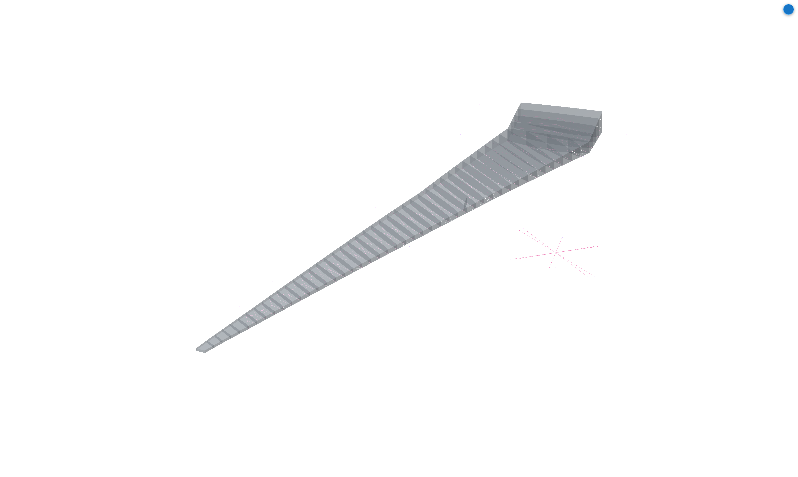
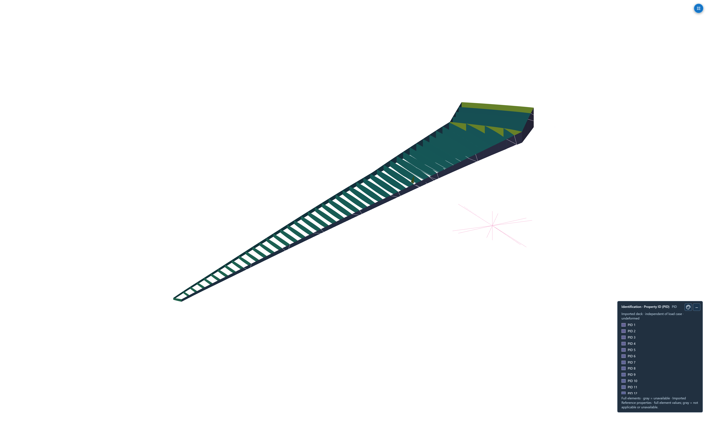
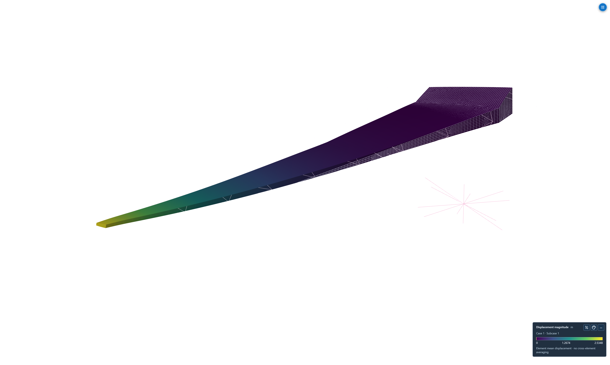
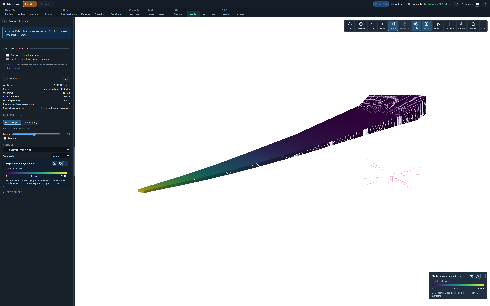
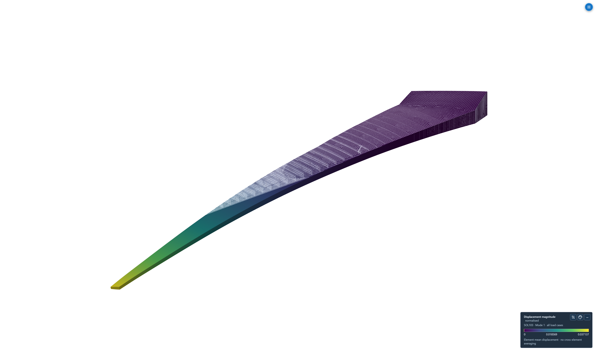
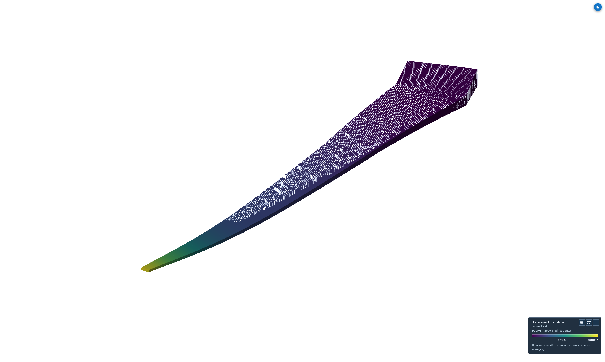
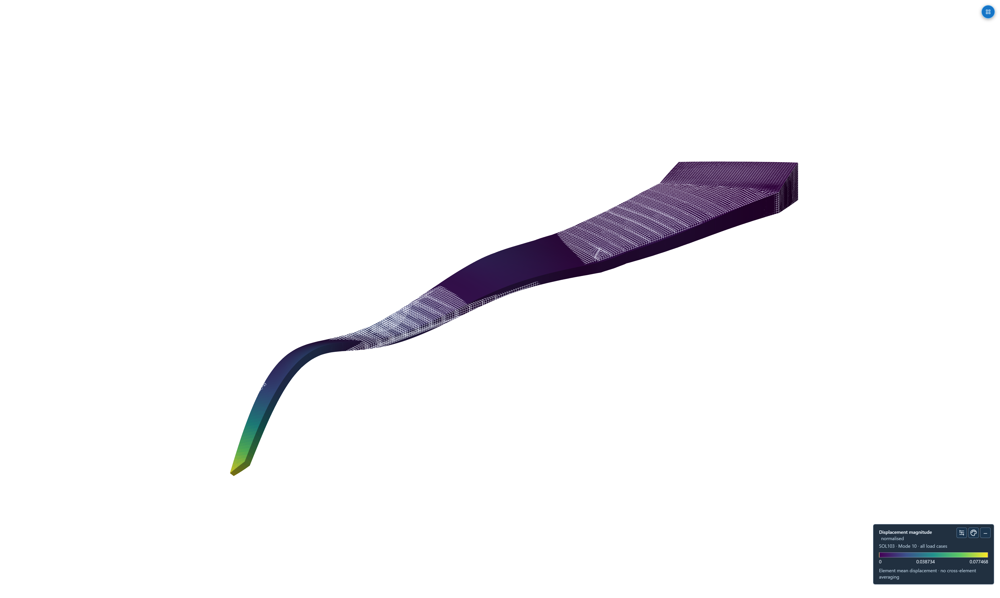
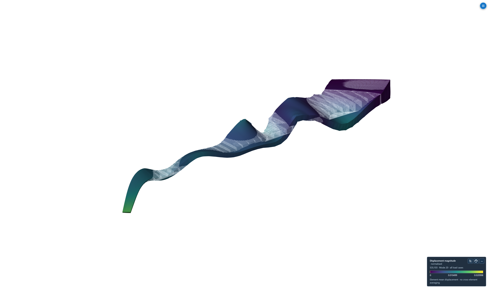

Original shell thickness
Original source PSHELL thickness, 3.7296–57.201 mm; this is a property field, not a result.
Original 4728 × 2832 PNG · Capture settings
Translucent model and rigid connections
Original shell surfaces shown translucently, with the engine cage and load/mass connections. Stiffeners are represented by smeared anisotropic panels.
Original 4728 × 2832 PNG · Capture settings
Internal ribs and spar webs
Skin property regions hidden through Boxer visibility controls. Property ID colors distinguish the remaining internal structure.
Original 4728 × 2832 PNG · Capture settings
Static cruise displacement at physical scale
Actual SOL101 translations, magnification exactly one. Color is displacement magnitude in metres; the wireframe is the undeformed reference.
Original 4728 × 2832 PNG · Capture settings
Static results in Boxer
Actual Boxer controls and retained native SOL101 translations. Physical scale is 1:1. Anisotropic stress fields are unavailable and are not replaced by zero.
Original 4800 × 3000 PNG · Capture settings
Mode 1 · 1.6248208 Hz
First original-model normal mode. Shape amplitude is arbitrary, amplified for visibility. The color legend is normalized displacement magnitude, not physical metres.
Original 4728 × 2832 PNG · Capture settings
Mode 3 · 3.8075782 Hz
Third normal mode with the undeformed wireframe reference. Rigid connections are hidden for clarity in result views; they remain in the solved model.
Original 4728 × 2832 PNG · Capture settings
Mode 10 · 18.949891 Hz
Tenth normal mode. No reference mode vectors are published, so the scalar frequency agreement does not establish a mode-shape MAC match.
Original 4728 × 2832 PNG · Capture settings
Mode 20 · 39.238070 Hz
Twentieth of 20 certified finite modes. Mode shapes retain their arbitrary native normalization; the visible deformation is magnified.
Original 4728 × 2832 PNG · Capture settings